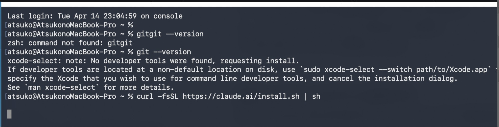
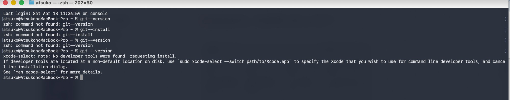
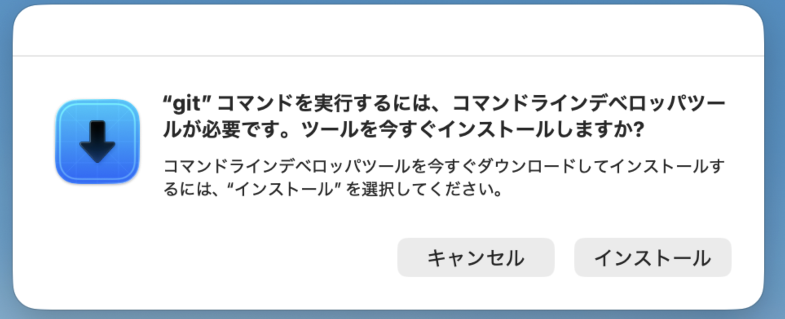
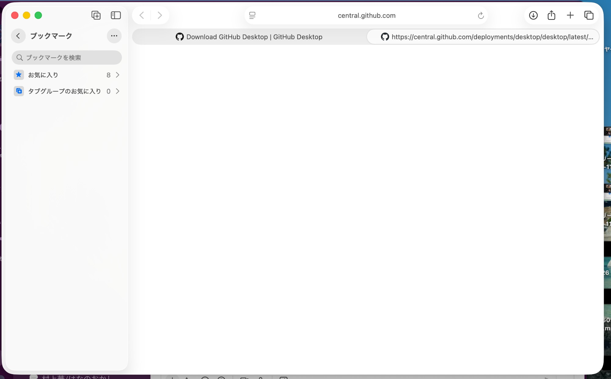
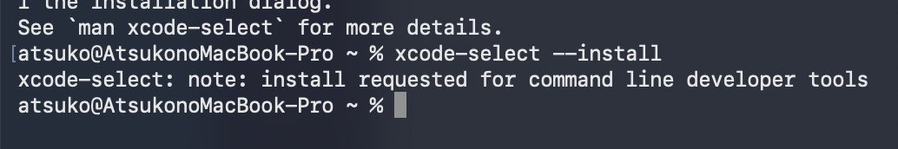
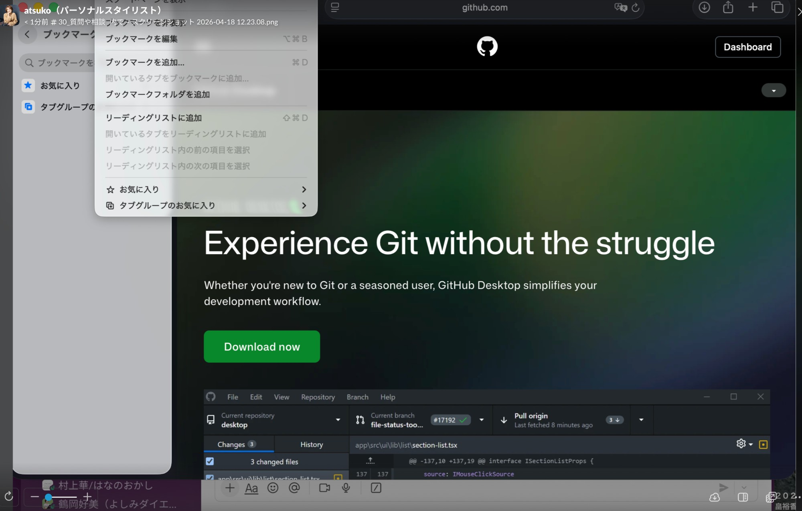
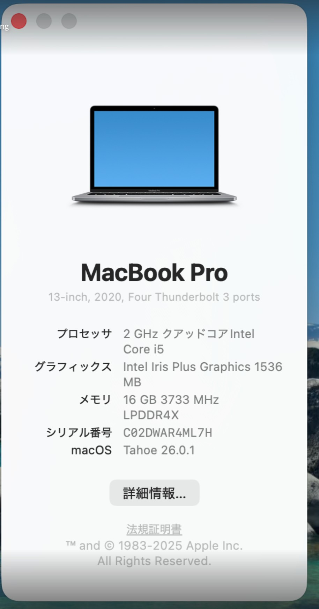
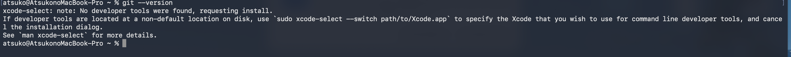

TROUBLESHOOTING ARCHIVE
篤子さん Intel Mac セットアップ全記録— Gitインストール不可問題に対して試した全ての対処 —
2026年4月18日のAIワークショップ当日、篤子さんのMacでGit（Command Line Tools）のインストールができず、Claude Codeを使ったLP制作が物理的に不可能でした。本ドキュメントは、当日その場で試した全ての対処と、なぜそれぞれが失敗したのかを時系列でまとめたものです。「PCの買い替えが本当に必要か」を判断するための一次資料として、チームで共有することを目的としています。
発生日： 2026/04/18対応者： あや結論： 当日中の解決は不可能
篤子さんのMacスペック
機種 MacBook Pro 13インチ（2020年モデル・中古購入） プロセッサ Intel Core i5 （Apple Siliconではない）メモリ 16GB OS macOS Tahoe 26.0.1（最新） キーボード Touch Bar搭載モデル（F3物理キーなし ） 購入経緯 中古購入のため、本人はIntel/Apple Siliconの区別を把握していなかった
試した対処の一覧（13項目）
Claude Codeのインストール／自動アップデート（v2.6） OK ターミナルで git --version 実行 警告 入力ミス系の試行（gitgit／git--version／git --install） FAIL Claude Codeを再インストール（curl install.sh） FAIL xcode-select --install → 「インストール」クリックCRITICAL 時間を置いてから再度 xcode-select --install FAIL GitHub Desktop（Apple Silicon版）をダウンロード FAIL 「このMacについて」でアーキテクチャ確認 判明 GitHub Desktop（Intel版）をダウンロードし直し 部分OK GitHub Desktop経由で再度 git --version FAIL F3キーでMission Controlを開いて隠れたポップアップを探す FAIL Homebrew（brew install git）の検討 不可 方針転換：当日の作業を別ツール（Google）に切り替え PIVOT
STEP 01
— ワークショップ開始直後 —
Claude Code のインストール／自動アップデート
あや
Cloud Codeの方でバージョンアップ…2.6か何かしらにアップデートされた…その後にGitが必要と出て、前に進むことができません。
結果
Claude Code自体は問題なくインストール完了（v2.6）
ここまでは順調 → 次の一歩でGitが必要と判明
STEP 02
ターミナルで git --version 実行
$ git --version
xcode-select: note: No developer tools were found, requesting install.
状況： Gitが入っていないため、xcode-selectが自動的にCommand Line Toolsのインストールを要求するポップアップを表示。ここまではmacOSの想定動作通り。

篤子さんから送られてきたターミナル画面（Step 02時点）
STEP 03
入力ミス系の試行
試したコマンド（すべて command not found）
gitgit --versiongit--version（スペース無し）git --install
結果： 正しいコマンドではないため当然エラー。「タイポではなく根本的にgitが入っていない」ことを再確認。
STEP 04
Claude Codeを再インストール（curl install.sh）
$ curl -fsSL https://claude.ai/install.sh | sh
# Claude Code自体は再インストールされたが、gitの問題は別レイヤー
結果： Claude Codeを入れ直してもgitは別途必要なため、何も変わらず。「Claude Code側の問題ではない」ことが確定。
CRITICAL 05
xcode-select --install → 「インストール」クリック
あや
『このソフトウェアは現在ソフトウェアアップデートサーバーから入手できないため、インストールできません』というポップアップが出ました。
エラー：このソフトウェアは現在ソフトウェアアップデートサーバーから入手できないため、インストールできません。

xcode-selectの「インストール」ポップアップ

「インストール」を押した直後に出たエラー画面
これが今回の最大の壁： Appleの公式インストールサーバーから Command Line Tools が「入手できない」と返される。ユーザー側の操作ミスではなく、Apple側のサーバーがこのMac構成（Intel × macOS Tahoe 26.0.1）に対応するパッケージを配信していない可能性。
STEP 06
時間を置いてから再度 xcode-select --install
結果
同じ「ソフトウェアアップデートサーバーから入手できない」エラーが再発
一時的なサーバー障害ではないことが判明

2回目以降のターミナル状態

ブラウザでGitHub Desktopを探し始めた瞬間
STEP 07
GitHub Desktop（Apple Silicon版）をダウンロード
狙い
xcode-selectがダメなら、GitHub Desktop経由でgitを入れられないか試す
desktop.github.com の緑のダウンロードボタン（デフォルトでApple Silicon版）を押した
あや
紫色に丸にバッテンみたいなアイコン……『アプリケーション "GitHub Desktop" はこのMacには対応していないため開けません』
エラー：アプリケーション "GitHub Desktop" はこのMacには対応していないため開けません。

GitHub Desktopのダウンロードページ（最初はApple Silicon版を踏んでしまった）
原因： 中古Macなのでご本人がIntel/Apple Siliconを認識しておらず、デフォルトのApple Silicon版を入れてしまった。
STEP 08
「このMacについて」でアーキテクチャ確認
確認した内容
アップルメニュー → このMacについて
プロセッサ：Intel Core i5 （Apple Siliconではない）
OS：macOS Tahoe 26.0.1（最新）
メモリ：16GB

「このMacについて」画面（Intel × Tahoe 26.0.1 × 16GB が確定）
STEP 09
GitHub Desktop（Intel版）をダウンロードし直し
# Intel Mac専用URL（darwin-x64）から再ダウンロード
https://central.github.com/deployments/desktop/desktop/latest/darwin-x64
結果
Intel版GitHub Desktopは 無事にインストール成功 ・起動もOK
「アーキテクチャ問題」だけは解消
STEP 10
GitHub Desktop経由で再度 git --version
狙い
GitHub Desktopが入ったので、内部でgitバイナリが付いてくることを期待
ターミナルで git --version を再実行
$ git --version
xcode-select: note: No developer tools were found, requesting install.
# → またxcode-selectのポップアップ → 同じApple Serverエラー
結果： GitHub Desktop内蔵のgitはアプリ内部用で、ターミナルからの git コマンドには使われなかった。結局Command Line Toolsが必要 → 同じApple Serverエラーで詰まる。堂々巡り 。
STEP 11
F3キーでMission Controlを開いて隠れたポップアップを探す
あや
お客さんのパソコンにF3のキーがないタイプのパソコンです。5、6年前のモデル……
試した代替操作
Touch Bar搭載モデルなのでF3物理キーがない
3本指で上スワイプ → 何も隠れていないことを確認
Cmd+Tab、Cmd+↑も試行 → インストール進行中の画面は存在せず
結果： 裏でこっそり進行している処理はなかった。Step 05のエラーで本当に止まっていることが確定。

この時点での画面状態（背後に何も動いていない）
STEP 12
Homebrew（brew install git）の検討
検討内容
Homebrewを入れて brew install git という案も検討
しかし HomebrewのインストールにもCommand Line Toolsが必須
つまり同じApple Serverエラーで先に進めない
結論： 「Command Line Toolsを入れるためにCommand Line Toolsが要る」という構造的なデッドロック。当日中に試せる選択肢は出尽くした 。
PIVOT 13
方針転換：当日の作業を別ツールに切り替え
あや
今日は少し難しいということなので、方向性を変えて、Claude CodeでLPを作るのではなく、他のツール……今回はGoogleスケッチで説明することに決定しました。
当日の最終方針
篤子さんのMacでのClaude Code利用は当日不可と判断
その場ではGoogle系ツールでイメージ共有のみ実施
LP本体は あやが代わりに制作 して納品（=今回 GitHub Pages で公開済みのもの）
Claude Code導入は PC環境が整ってから あらためてサポート
REFERENCE
講師からの回答（4/19・Slack経由）
講師（茶花AI勉強会）
買い換える必要はないと思いますが、Claude Chat で今のエラーを聞いて解決するまでゴニョゴニョするが最短かなと。もしくは買い替えていいなら買い替えてしまうのもアリですね。
講師の見解： 「絶対に買い替えが必要」とは言っていないが、「Claude Chatで根気よくデバッグするのが最短」という回答。つまり確実な解決策はない 状態。
当日の結論サマリー
13通りの対処を試みたが、いずれもAppleのソフトウェアアップデートサーバーが Command Line Tools を配信してくれないことに起因する根本問題に阻まれた。
原因はユーザーの操作ミスでも、Claude Code側の問題でもなく、Apple側のサーバーが Intel × macOS Tahoe 26.0.1 という組み合わせに必要なパッケージを配信していない こと。これは個人の努力では解決不可能な領域。
篤子さんへの今後の選択肢（チームで議論したい論点）
選択肢 判定 説明
A. PCを買い替える（Apple Silicon機） 確実
M1〜M4チップなら Command Line Tools のインストール問題は起きない。今後Claude Codeを継続的に使うなら最短ルート。中古M1 MacBook Air なら6〜10万円台。
B. 現Macで根気よくデバッグを続ける
不確実
講師の推奨ルート。ただし当日13通り試して詰んだ実績があり、解決保証なし。Apple側の配信が再開するのを待つ可能性も。
C. ブラウザ版 Claude（Claude.ai）でLP制作を続ける
代替可
HTMLコードを生成 → コピー → ペライチ等にペースト の運用は可能。ただしファイル単位の管理・GitHub連携・複数ファイル編集はできない。「LP1枚程度」なら現実的。
D. 当面は あやに制作を依頼する
現状継続
今回のLP納品と同じ運用。Claude Code活用を本人が学ぶフェーズには入れない。
E. 別マシン（Windows/Chromebook）導入
非推奨
Claude Code は Mac/Linux 中心の運用が多く、Windowsだと別の詰まりポイント発生。今のMacを使い続けるよりコストパフォーマンス悪い。
あやの所感： 篤子さんが「Claude Codeを自分で使えるようになりたい」と本気で考えているなら、Apple Silicon機への買い替えが結局いちばん早い。「LPだけ作れればいい」なら C か D で十分。判断は本人の学びたい温度感次第。
講師に追加で確認したいこと
同じ症状（Apple Server エラー）の他の事例はあるか／macOS側の修正バージョンは出そうか
Command Line Tools を 手動で .pkg ダウンロード する正規ルート（developer.apple.com）でも同じエラーが出るのか
ブラウザ版 Claude のみで「実用的なLP制作」がどこまで可能か（チーム内の事例）
もし買い替えるなら、どのMacが推奨か（M1/M2/M3/M4・Air/Pro・新品/中古）